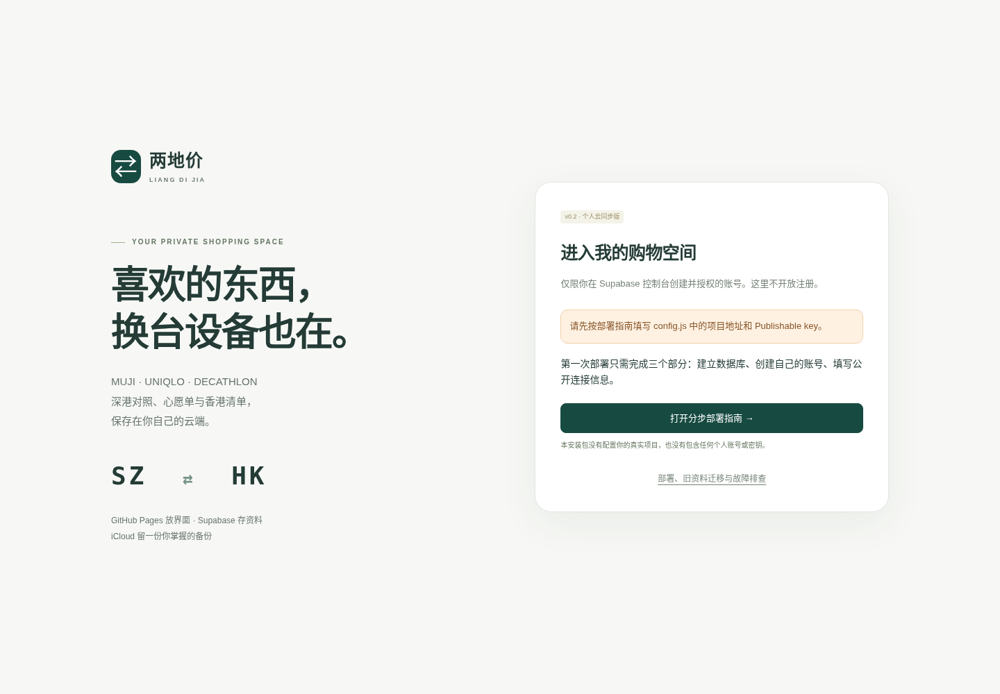

两地价 v0.2：从下载文件到跨设备同步
部署组合：GitHub Pages＋Supabase Free＋iCloud 手动备份。
本包是已经改造好的网页代码，不是已经替你开通的在线服务。你需要在自己的账号中完成下列配置。无需安装 npm、打包前端或让 Mac 一直运行。核对日期：2026 年 10 月 10 日。
分清三个位置：**网页文件上传 GitHub；SQL 脚本在 Supabase 执行；个人 JSON 备份放 iCloud。**不要把个人备份或旧版 SQLite 数据库上传到公开仓库。
0. 开始前，先保护旧资料
打开你目前使用的 v0.1 网页，进入“设置与备份”，点击“导出 JSON 备份”。确认下载到了一个 .json 文件，再复制到 iCloud Drive/两地价备份/。
这一动作必须在原来保存资料的浏览器里完成。v0.1 的浏览器存储不会因为新网址上线而自动迁移。不要先清理原浏览器或删除旧版文件。
下载并解压 v0.2 包。你会看到：
liangdijia-v0.2-cloud/
index.html 网站入口
config.js 你只需要修改这个配置文件
assets/ 界面、同步与登录代码
manifest.webmanifest 手机入口信息
.nojekyll Pages 静态文件标记
supabase/
01-schema.sql 建表、RLS 与保存函数
02-authorize.sql 授权自己的 Auth 用户
03-check.sql 部署权限自检
DEPLOY.html 可双击打开的本指南
DEPLOY.md / README.md 说明文本
TEST_REPORT.md 测试范围与未验证事项
tests/ 本地测试；日常使用不需要运行
1. 建立免费的 Supabase 项目
打开 Supabase 控制台。可以使用 GitHub 账号登录其管理后台，但这不会自动创建两地价的网站登录账号。
选择或新建一个 Free 组织，点 New project。项目名称可填 liangdijia；数据库密码自行生成并保存到自己的密码管理器。区域选择界面中可用的亚洲区域即可，例如列表中出现 Singapore 时可选它；这不保证深圳访问速度，后面要用你的真实网络实测。
确认组织／项目属于免费方案，不需要为本教程升级到 Pro，不启用付费附加功能。项目建立后进入项目控制台。
**预期结果：**你能看到项目左侧的 SQL Editor、Authentication、Table Editor 等入口。
Supabase 当前 Free 包含 500 MB 数据库，并有连续一周不活跃暂停等限制；免费规则可能变化，以当时控制台为准。官方费用与限额
2. 运行建表脚本——不必逐个手工建表
用 VS Code 或其他纯文本编辑器打开包内 supabase/01-schema.sql，复制全部内容。
在 Supabase 项目中进入 SQL Editor → New query，粘贴全文，然后点 Run。运行成功后显示 Success／No rows returned 是正常结果：脚本主要建立结构，不会给你塞入示例商品。
在 Table Editor 可看到 ldj_access 和 ldj_workspaces 两张表。第一张是准入名单；第二张保存该用户完整的购物空间。刚建好时为空是正常的。
**不要关闭 RLS。**脚本已经设置“登录用户只能访问自己的资料”，并限制未授权用户、匿名用户和公开连接密钥的权限。资料权限在数据库端检查，不是靠隐藏网页按钮。RLS 官方说明
脚本可重复运行，不会清空已有购物数据。它不修改你的其他业务表。首次请使用专门为两地价创建的项目。
3. 创建你自己的“网站登录账号”
进入 Authentication → Users → Add user → Create new user。填写你自己使用的邮箱，并设置一个独立的网站密码，建议至少 12 位。
如果有 Auto Confirm User 选项，保持勾选。这是在你自己的控制台创建自己的账号，不需要等待验证码邮件。不要选 Send invitation；本版不处理邀请邮件里的登录回调。
创建完成后，点开这名用户，复制 User UID。它是类似下面这样的 UUID，不是邮箱：
12345678-1234-1234-1234-123456789abc
在 Authentication → Sign In / Providers（某些界面在 Configuration 下）关闭 Allow new users to sign up；保持 Email 登录启用，保持匿名登录关闭。控制台菜单可能调整，找同名选项即可。不要为了解决问题全局关闭邮箱验证；用刚才创建时的自动确认选项即可。Auth 配置说明
本网页只提供邮箱＋密码登录，不包含注册入口，也没有配置 GitHub OAuth、邮箱魔法链接或短信登录。默认邮件服务有收件人和发送次数限制，这条路线让日常登录不依赖邮件。邮件限制说明
三样容易混淆的信息
| 信息 | 用途 | 填在哪里 |
|---|---|---|
| 数据库密码 | 项目管理与数据库连接 | 自己保管，不填网页 |
| 网站账号邮箱＋密码 | 两地价登录 | 网页登录框 |
| Project URL＋Publishable key | 网页连接你的项目 | 下一步的 config.js |
不要把密码或管理密钥发给 ChatGPT，也不要提交到仓库。
4. 给这个账号授权，并自检权限
打开 supabase/02-authorize.sql，复制到一个新的 SQL Editor 查询中。只在控制台查询里把这一行的占位文字替换为刚才复制的 User UID：
declare v_uid text := 'REPLACE_WITH_YOUR_AUTH_USER_UUID';
替换后应类似（以下是假 UUID，不能照抄使用）：
declare v_uid text := '12345678-1234-1234-1234-123456789abc';
运行整份授权脚本。看到 authorized_users = 1 即为预期结果。包内原文件保留占位符即可，不必把你填入实际 UID 的查询上传 GitHub。
再复制并运行 supabase/03-check.sql。它应输出 10 项检查，ok 都为 true。这些检查确认表的 RLS、匿名访问限制、函数权限、单用户授权等结构；它们不能替代后面的真实双设备测试。
**出现错误就停在这一步检查，不要关闭 RLS“试试看”。**常见原因是 UUID 填成邮箱、Auth 用户还没有创建、SQL 在另一个项目运行，或上一份脚本未完整执行。
5. 填写 config.js——只改两处
在项目顶部的 Connect 面板或项目 Settings → API Keys／Data API 区域找到：
- Project URL：形如
https://你的项目编号.supabase.co。 - Publishable key：以
sb_publishable_开头。
菜单位置可能调整，认准字段名。不要复制浏览器里的控制台地址 supabase.com/dashboard/...。官方密钥说明
在 VS Code 打开包内 config.js，只替换两个引号内的值，保留英文引号、逗号和括号：
window.LDJ_CONFIG = Object.freeze({
supabaseUrl: "https://你的项目编号.supabase.co",
supabasePublishableKey: "sb_publishable_你的公开密钥"
});
Publishable key 是设计为可以放到网页前端的公开连接信息；数据库权限仍由登录身份和 RLS 控制。**不要填写 sb_secret_、service_role、数据库密码或个人访问令牌。**本版会拒绝不符合格式的密钥。
保存成 UTF-8 纯文本。使用 TextEdit 时要特别避免富文本或自动追加 .txt；优先沿用你熟悉的 VS Code。
6. 上传 GitHub 并打开 Pages
在 GitHub 创建一个仓库，名称推荐 liangdijia，选择 Public，可勾选添加 README。免费账号的这个方案使用公开仓库；普通 GitHub Pages 网页本身是公开入口，只有登录之后才能读取个人数据库。Pages 官方说明
进入仓库，点 Add file → Upload files。上传解压后文件夹里面的内容，不要上传 ZIP，也不要把外层文件夹再套进去。
最少需要上传：
仓库根目录/index.html
仓库根目录/config.js
仓库根目录/manifest.webmanifest
仓库根目录/DEPLOY.html
仓库根目录/assets/（整个文件夹）
本包的说明、SQL 占位脚本、测试源码也可以一起上传；其中没有你的实际账号凭据。supabase/02-authorize.sql 保留原占位符。
绝不能上传：你的 JSON 购物备份、旧版 personal.sqlite3、数据库密码、私钥、令牌。.gitignore 只对常规 Git 跟踪有作用，不是防止网页手动上传敏感文件的保险，仍要自己核对文件清单。
点 Commit changes。文件列表中应当直接看到 index.html，而不是先看到一个 liangdijia-v0.2-cloud 子文件夹。
然后进入仓库 Settings → Pages：
| 选项 | 选择 |
|---|---|
| Source | Deploy from a branch |
| Branch | main |
| Folder | / (root) |
点 Save。这是静态文件，不需要 npm build，不需要配置 Actions 的密钥。发布源配置说明
.nojekyll 是隐藏文件，访达默认可能看不到。可用 Command + Shift + . 显示后上传；也可以在仓库 Add file → Create new file 新建 .nojekyll，填一行注释或保留空文件后提交。
GitHub 显示部署完成后，在 Pages 页点击 Visit site。通常网址形如：
https://你的GitHub用户名.github.io/liangdijia/
以 GitHub 实际给出的完整网址为准，保存到书签。不是仓库页面 github.com/用户名/liangdijia，也不是 github.io 后遗漏了仓库名的网址。
7. 第一次登录与旧资料迁移
打开 Pages 网址，用步骤 3 创建的网站账号登录。只有当登录和云端读取都成功，才会进入购物空间。第一次是空清单，不代表旧资料丢了——旧版资料还在原浏览器和你的 JSON 备份中。
先手动添加一个名称明确的测试商品，例如“部署验证—随后删除”。等页面显示 “已同步到云端 · v1” 或其他版本号。
打开另一台电脑／手机的同一个网址，用同一账号登录。确认测试商品出现。修改备注或心愿单标记，等同步成功，再回第一台设备点击“立即同步”，确认能读回。
验证通过后，删除测试商品，等待同步；再进入 设置与备份 → 导入旧版 / 备份，选择步骤 0 导出的 JSON 文件。核对弹窗中的商品数量后确认导入。导入是整份替换，不是自动合并；当现有清单非空时，网页会先发起一份替换前备份下载。
等待“已同步到云端”，并再次用第二台设备确认商品数量、心愿单、香港清单和一项报价正确。不能只看“导入成功”的提示就清理旧版。
最小上线验收
| 场景 | 应看到的结果 |
|---|---|
| 电脑新增、手机读取 | 同一件商品出现 |
| 手机修改备注／收藏、电脑同步 | 修改被读回 |
| 删除一个测试商品 | 第二台设备同步后也删除 |
| 无痕窗口打开网址，不登录 | 只见登录页，不见你的清单 |
| 浏览器已打开时临时断网并保存 | 提示未同步；联网后可重试，草稿不被当作云端成功 |
| 两台设备从同一旧版本各自修改 | 后保存者明确提示冲突，不静默覆盖 |
| 导出再检查 JSON | 商品存在，不含密码／登录令牌 |
请在深圳常用 Wi-Fi 和手机网络都测试“登录＋保存＋读回”。本包没有在你的网络、真实 Supabase 项目或 iOS／华为浏览器上实测。免费项目暂停、网络不可达或配置错误都可能导致页面能打开但数据连不上。
8. iCloud 备份怎样日常使用
进入 设置与备份 → 导出到 iCloud / 文件。
支持选择保存位置的浏览器会弹出文件选择器，在其中选择 iCloud Drive/两地价备份/。其他浏览器会下载 JSON；下载后在访达或“文件”中将其移动到该目录。手机浏览器的下载保存位置由系统与浏览器决定，以实际界面为准。
文件名含日期、时分秒，例如：
liangdijia-backup-2026-10-10-143205.json
若含未同步修改，文件名会标为 unsynced。备份与旧版相同，保存的是购物资料，不含 Supabase 登录令牌和密码。
**这里不是自动 iCloud 接口。**网页可以发起下载或写入你选择的文件，但无法确认 iCloud 是否已上传成功。请在系统里检查文件状态；没有文件选择权限时，不会强行写入系统目录。Apple 的 iCloud Drive 文件说明
建议在大批录入后、准备去香港购物前，以及修改网站或数据库配置前留一份备份。不要让两台设备分别导出后又随意导入不同旧文件；正常日常使用只依赖 Supabase 同步。
9. 冲突与断网：怎样处理才不会丢东西
本版按“完整购物空间＋版本号”保存，兼容旧备份。它适合一个人低频编辑，不是多人实时协作数据库。
两台设备同时修改时，后保存的一台可能显示“版本冲突”。此时这台设备仍显示它自己的草稿，并未自动合并到云端。点击“备份后载入云端”，先导出草稿；网页会再问一次是否已经确认文件保存成功，确认后才载入最新云端资料。之后参照刚才的备份补回需要的变更。
不要为了消除警告直接把旧备份整库导回去，否则可能把别的设备的新修改替换掉。没有自动“强制覆盖云端”按钮。
每个标签页的本机草稿单独存放；页面重新加载时会检查版本。关闭旧标签页后，可到“检查本机草稿”导出其他标签页留下的待核对副本。草稿只存在此浏览器，不等于云同步，也不会跨浏览器自动恢复。
网络中断期间，已打开且已成功读取过云端的页面可以保存修改到本机草稿。首次登录／重新打开页面仍需要联网读取云端，本版不是完整离线 PWA，也没有让你误以为离线时已经同步成功。
使用私人设备时可保持登录。某些不支持所需跨标签页锁机制的浏览器只在当前标签页保留登录，下次再登录即可，云端资料不受影响。普通本机草稿不是加密保险箱；公用设备不建议使用。
10. 常见问题
Pages 404，或者只显示 README
检查 Pages 的分支和目录选择，以及 index.html 是否就在所选目录根部。不要把 ZIP 当网站上传，不要多套一层目录。确认 GitHub 部署已成功，打开 Pages 提供的 Visit site，而不是仓库链接。
页面提示“先填写 config.js”
在 GitHub 仓库里打开 config.js，确认是你的真实 Project URL 和 sb_publishable_ 密钥，不是占位文字。保存提交，等新部署显示完成后刷新。不要只修改电脑里的文件而忘记上传。
邮箱或密码不正确
网站登录使用 Authentication → Users 创建的账号，不是数据库密码，也不自动等同于 GitHub 或 Supabase 管理后台的密码。
提示“尚未授权”
检查是否运行了 02-authorize.sql，UUID 是否就是当前登录用户，配置是否连到同一个 Supabase 项目。不要关闭 RLS 或把匿名用户加入白名单。
表不存在、函数不存在、权限错误
完整运行 01-schema.sql，再运行 03-check.sql。检查表和函数创建在 public schema，Data API 包含 public（新项目通常默认如此）。本版不依赖 Supabase Storage 文件桶，不需要创建公开 bucket。
能登录，但免费项目／网络导致读取失败
查看 Supabase 控制台项目是否暂停，按界面恢复项目；不要删除项目重建。再检查你的实际网络，回网页重试。程序不会用空清单覆盖读取失败的数据。项目长期停用后的恢复规则以官方当时政策为准。
忘记网站密码
还能在某个设备登录时，进入“设置与备份 → 修改网站密码”。已经完全无法登录时，使用你自己控制台的用户管理／官方 Auth Admin 恢复流程处理；切勿把管理密钥放进网页。
**不要简单地删除 Auth 用户再重建。**数据库设置了归属关系，删除该用户会级联删除其购物空间；更改 UID 会被视为另一个用户。先保护备份。
是否已经能自动抓官网和小程序价格？
没有。v0.2 这次改造的是登录与跨设备同步。GitHub Pages 不运行 v0.1 的 Python 采集服务。官网链接、官方小程序手动录价、采集书签、比价、汇率手动设置、价格历史都保留；自动官网抓取、自动汇率更新、小程序私有接口和门店实时库存没有部署。页面对此有明确提示。
更新代码会不会清空购物资料？
按本版方式更新 GitHub 的界面文件不会主动清空 Supabase 资料。但不要切换项目、换 Auth 用户 UID 或手动删除数据表。任何数据库结构更新前先导出备份。
我需要一直开着 Mac 吗？
部署完成后不需要。只有选择下面的本地预览方式时才需要运行本地静态服务；日常直接打开 Pages 即可。
开发者补充（首次部署不必做）
在包所在目录运行 python3 -m http.server 8000，打开 http://127.0.0.1:8000/ 可本地预览。需要已经正确填写 config.js；仍连接同一个真实云端项目，不是独立测试库。不要在预览里随意清空真实资料。
单元测试：node --test tests/sync.test.cjs。浏览器测试使用本地 DOM 和模拟 REST／存储，不代表真正完成 Supabase 部署。详见 TEST_REPORT.md。
此版使用标准 Fetch 调用 Supabase Auth 和 Data REST API，生产网页没有额外 CDN 依赖。所有资源是相对路径，支持 GitHub Pages 的仓库子路径。公开配置无管理级凭据；本地会话保存在浏览器存储中，通过实际 Auth 用户端点、访问名单、RLS 和带版本号的数据库函数读写。
两地价 v0.2 · 2026-10-10 · 操作界面可能调整，以官方控制台为准。不要公开个人备份或管理密钥。